This page applies to industrial clients. Academics will continue to use Alliance MFA.
If you have any questions, please contact ACENET Support.
Multi-factor authentication (MFA) enhances your account security by requiring more than just a password. Once your account is set up to use MFA, you must enter your username and password as usual, followed by a second authentication step to access our service. Cisco Duo Security is a flexible and user-friendly cloud-based service for MFA authentication. You can choose any of the following methods for this second step:
1. Install the Duo Mobile authentication application from the Apple Store or Google Play.
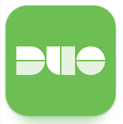
2. Open the enrollment email which is sent to you from Duo Security, and click on the provided link to complete the MFA enrollment. After clicking the link, you are directed to Duo Security portal to register your device.
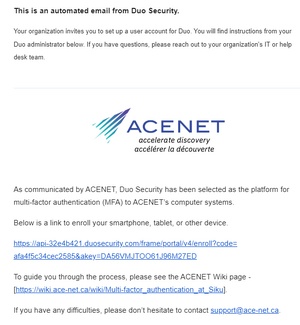
3. Click on Get started.
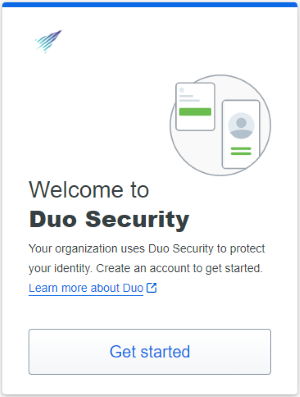
4. Click on Duo Mobile to add your device.
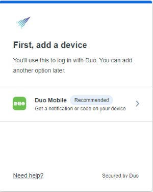
5. Select I have a tablet and Click Next.
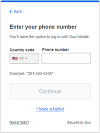
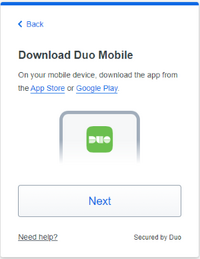
6. Open your Duo Mobile App, tap on + Add , and tap on Use the QR code to scan the given QR code. It adds your smart device to Duo MFA, then Duo informs you that a device was added. Click Continue to complete the setup.
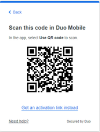
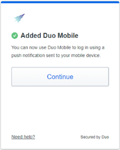
7. Duo sends you an email about registering a new device.
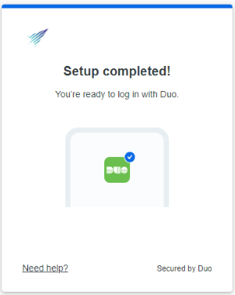
If you do not have a smartphone or tablet, do not wish to use your phone or tablet for multifactor authentication, or are often in a situation when using your phone or tablet is not possible, then a YubiKey is another option at Siku.
A YubiKey is a hardware token made by the Yubico company. Multiple protocols are supported by YubiKeys; our cluster uses the One-Time Password (OTP) protocol. Note that some YubiKey models are not compatible don't support the "OTP" function, which is required. We recommend using the YubiKey 5 Series. See the Yubico identification page for reference.
To register your YubiKey you will need its Public ID, Private ID, and Secret Key. If you have this information, add them into `yubikey-info.txt` in your home directory, and send a request to ACENET Support to connect the hardware token with your account. If you do not have this information, configure your key using the steps below.
1. Download and install the YubiKey Manager software from the Yubico website.
2. Insert your YubiKey into your computer and launch the YubiKey Manager software.
3. In the YubiKey Manager software, select Applications, then OTP.
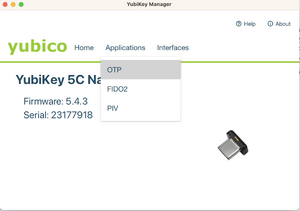
4. Select Configure for either slot 1 or slot 2. Slot 1 corresponds to a short touch (pressing for 1 to 2.5 seconds), while slot 2 is a long touch on the key (pressing for 3 to 5 seconds). Slot 1 is typically pre-registered for Yubico cloud mode. If you are already using this slot for other services, either use slot 2, or click on Swap to transfer the configuration to slot 2 before configuring slot 1.
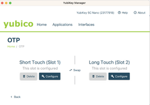
5. Select Yubico OTP.
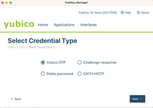
6. Select Use serial, then generate a private ID and a secret key. Securely save a copy of the data in the Public ID, Private ID, and Secret Key fields before you click on Finish.
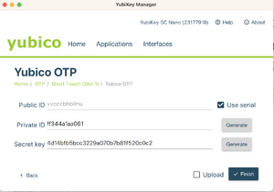
7. Store the Yubikey information to `~/yubikey-info.txt` and send a request to ACENET Support to enable Yubikey OTP for your account.
The next day after enabling MFA for your account, when you connect via SSH to industry.siku.ace-net.ca you will use either your password or SSH key, depending on whether you have an SSH key pair installed.
Following that you will be prompted to use your second factor.
If you type 1, Duo sends a Push Notification to the phone or other device you have registered. Approve it to log in.
$ ssh -i .ssh/testuser-duo.pem an-testuser-duo@industry.siku.ace-net.ca
(an-testuser-duo@industry.siku.ace-net.ca) Duo two-factor login for an-testuser-duo
Enter a passcode or select one of the following options:
1. Duo Push to Android
Passcode or option (1-1): 1
Success. Logging you in...
Success. Logging you in...
-----------------------------------------------------------------------------
Welcome to Siku
-----------------------------------------------------------------------------
[an-testuser-duo@sikuindustry ~]$
If you enter an OTP associated with your Duo account, you can log in.
$ ssh -i .ssh/testuser-duo.pem an-testuser-duo@industry.siku.ace-net.ca
(an-testuser-duo@industry.siku.ace-net.ca) Duo two-factor login for an-testuser-duo
Enter a passcode or select one of the following options:
1. Duo Push to Android
Passcode or option (1-1): 004145
Success. Logging you in...
Success. Logging you in...
-----------------------------------------------------------------------------
Welcome to Siku
-----------------------------------------------------------------------------
[an-testuser-duo@sikuindustry ~]$
If you set up a Yubikey OTP, you can press the Yubikey (short or long press based on your configuration) as the second factor to log in.
$ ssh -i .ssh/testuser-duo.pem an-testuser-duo@industry.siku.ace-net.ca
(an-testuser-duo@industry.siku.ace-net.ca) Duo two-factor login for an-testuser-duo
Enter a passcode or select one of the following options:
1. Duo Push to Android
Passcode or option (1-1): vvcccbikhhhgjtdkevjfiegcelneekhnejnbddhucvjk
Success. Logging you in...
Success. Logging you in...
-----------------------------------------------------------------------------
Welcome to Siku
-----------------------------------------------------------------------------
[an-testuser-duo@sikuindustry ~]$
If you want to change any factors, you must send a request to ACENET Support to remove the previous registered devices. When you connect to SSH login node, you will get a link to register the new device. You are required to register a device for MFA to be able to log in; otherwise, your connection request is rejected.
$ ssh -i .ssh/testuser-duo.pem an-testuser-duo@industry.siku.ace-net.ca
Please enroll at https://api-32e4b421.duosecurity.com/frame/portal/v4/enroll?code=fd78e57dd5203990&akey=DA56VMJTOO61J96M27ED
Please enroll at https://api-32e4b421.duosecurity.com/frame/portal/v4/enroll?code=fd78e57dd5203990&akey=DA56VMJTOO61J96M27ED
Please enroll at https://api-32e4b421.duosecurity.com/frame/portal/v4/enroll?code=fd78e57dd5203990&akey=DA56VMJTOO61J96M27ED
an-testuser-duo@industry.siku.ace-net.ca: Permission denied (keyboard-interactive).
...